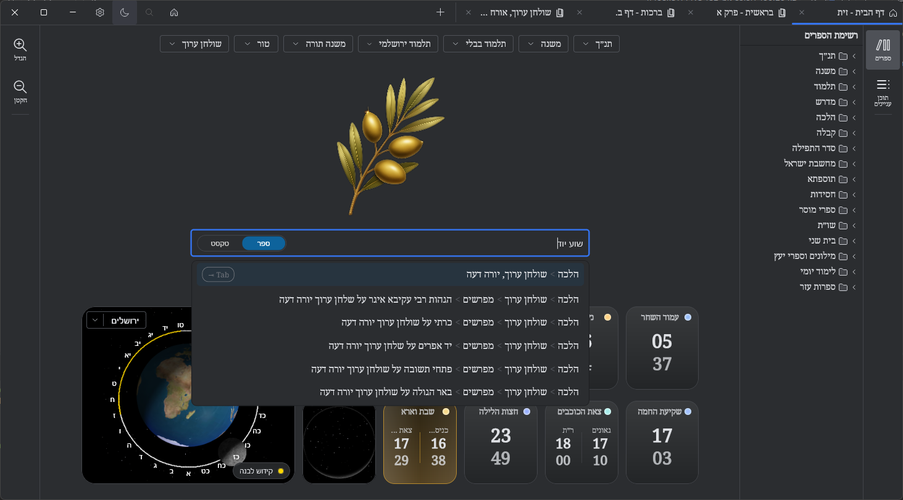
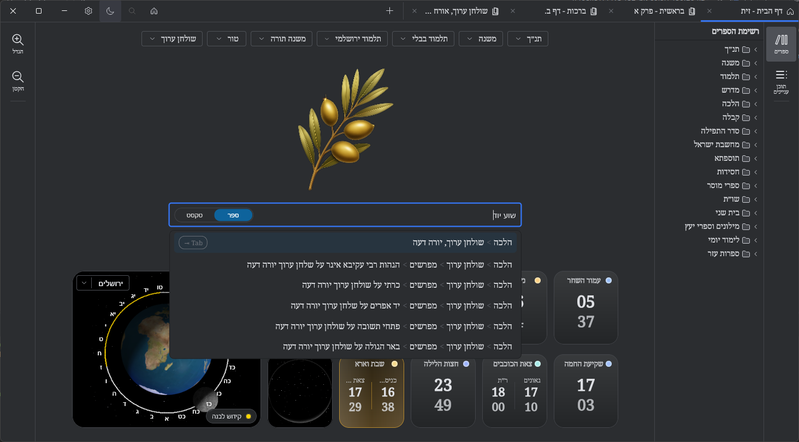
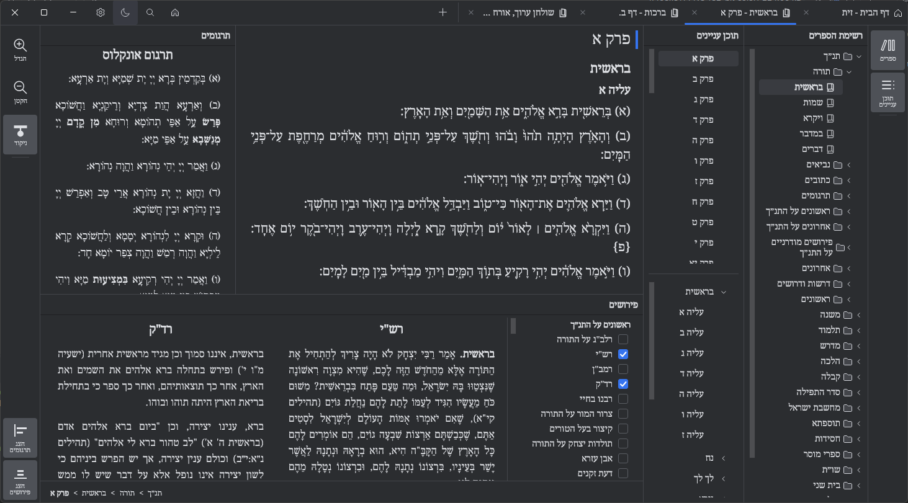
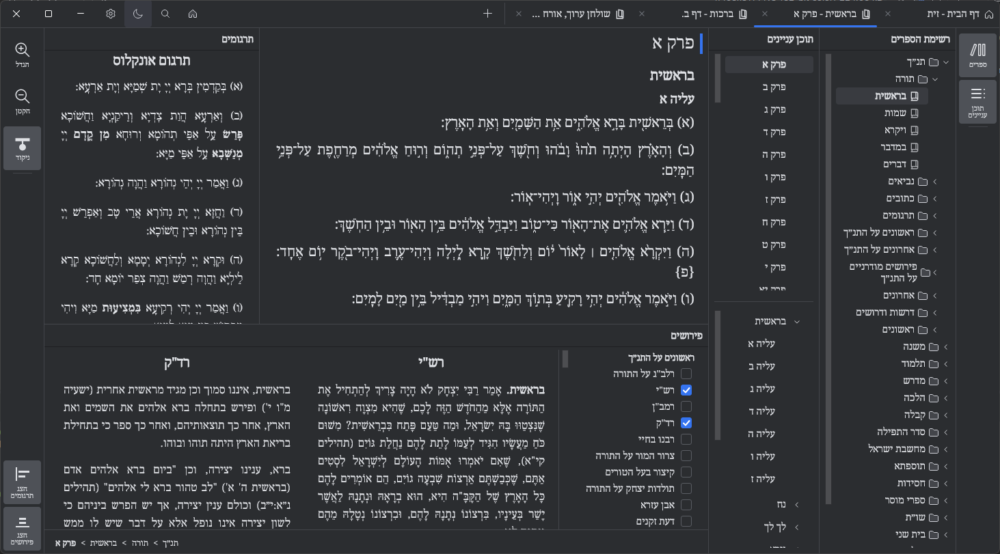
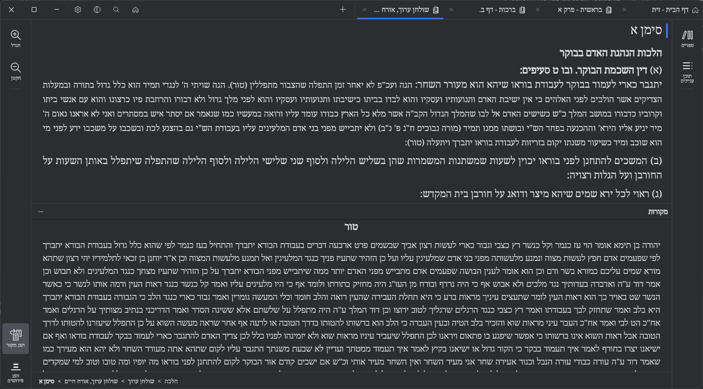
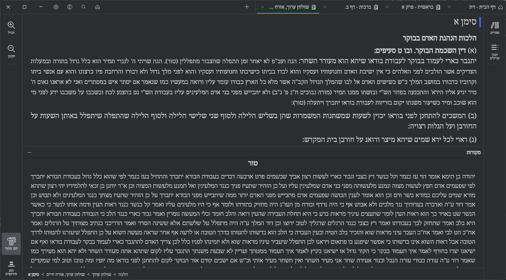
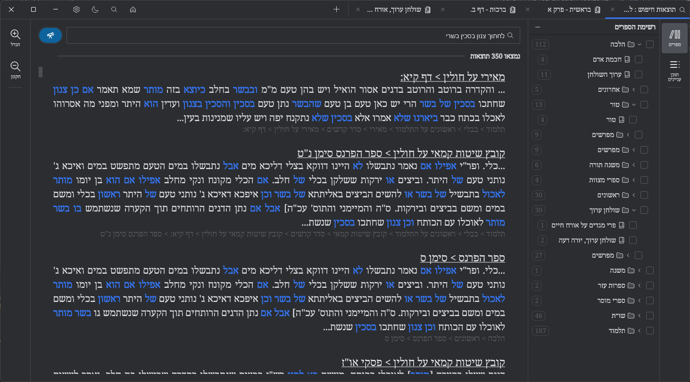
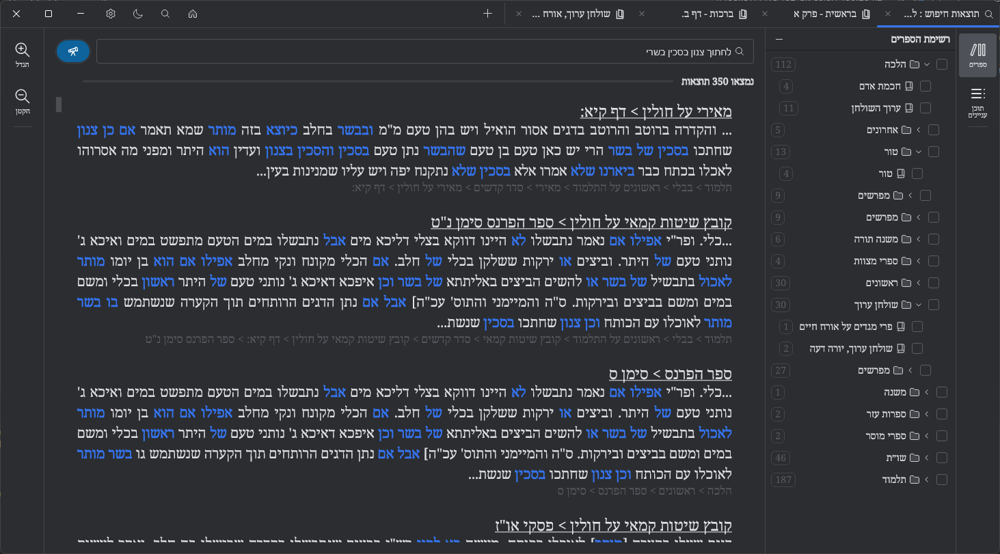

Featuring a free multiplatform desktop application for study of jewish texts
Zayit is a dream come true: a natural, fluid, and intuitive study experience.
The project will remain free by principle. With Hashem's help, Zayit will keep growing without losing its spirit. Support is welcome and meaningful.
Zayit is designed like a digital study hall: stable, fast, consistent. You feel the calm of study: everything works, everything is in its place. The text stays at the center, with respect and without distractions.
Built on JetBrains technologies, including Compose Desktop and Jewel. Inspired by Google Chrome and IntelliJ IDEA, it offers a professional interface that is fluid and natural, respects study, and does not strain the eyes.
 

The layout adapts instantly: organize the screen the way you want. Show, hide, compare, and tailor reading to your study style.
 

 

Find a passage in seconds with simple or advanced search
Explore the library by book title and table of contents
Search inside a book to prepare a lesson or review
Show commentaries and translations side by side
Access sources for a passage quickly
Copy a clean excerpt to share in a lesson or with a study partner
A powerful engine designed to understand texts, not just find them. The database was rebuilt to make search and navigation precise.
Powered by Lucene and enhanced by AI for precision

 

Exceptionally fast, even on old computers. Zayit is optimized to run smoothly on any machine, so you can focus on study, not on waiting.
Zayit is free and will remain free. Always. This is a commitment, not a marketing promise.
A vast library of Jewish texts at your fingertips. Torah, Talmud, Halacha, Midrash, commentaries, and much more.
No internet required. Once installed, Zayit works completely offline. Your study is never interrupted.
Zayit aims for quality and consistency: no gimmicks, no noise. Like a digital study desk, everything is there to move forward. Every detail is designed for natural, respectful study. Built to be fast, light, almost magical, it runs even on low-powered machines.
Available on all major desktop platforms